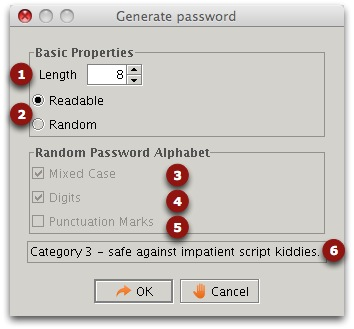

Password Generator

- The length of the password.
- If you select "readable" passwords, only characters a-z
will be used. This is less safe, but it is easier to remember the
passwords. It depends which level of security you want.
- Upper/lower case will be used if selected.
- Digits will be used if selected.
- Punctuation will be used if selected. Not all applications support such passwords.
- The category gives an indication of the safety level of the generated passwords. This is only indicative.
The more "unreadable" you make the passwords the safer they are, but the trade-off is that they are difficult to remember.